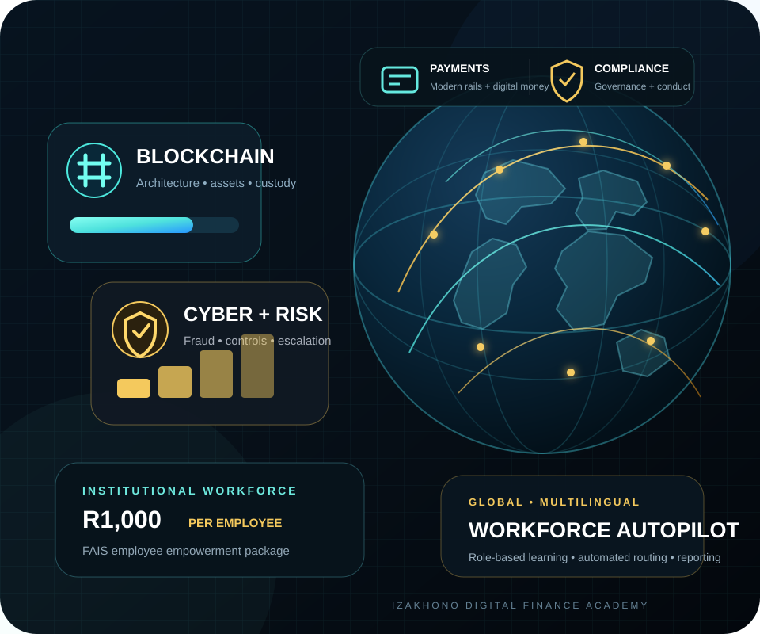

Automatic onboarding
Validate enrolment state, request a baseline assessment and assign the employee to a role-specific pathway.
Train leaders, professionals and teams in blockchain, digital assets, payments, fintech, cyber risk and compliance — with multilingual, role-based learning built for institutional use.

Deploy executive briefings, staff academies, specialist labs and customer education in the language and operating context your people use.
IZAKHONO separates universal digital-finance concepts from country-specific regulatory overlays. Full course language packs are released only after translation and subject-matter review.
A role-based employee empowerment programme for FSPs, banks, insurers, brokerages, advisers, compliance teams, Key Individuals, representatives and digital-finance businesses.
Employee empowerment and professional development. It does not replace applicable RE exams, recognised qualifications, Class of Business or product-specific training, and no FSCA endorsement is implied. Consumer iKhokha checkout remains separately gated until the product-specific payment and entitlement flow is verified.
Select the institutional audience, programme format, language and scale. The configuration stays on this device and produces a proposal brief without collecting personal data.
The IZAKHONO automation engine can route a pseudonymous learner through onboarding, baseline assessment, role-based learning, remediation, completion eligibility and reporting decisions. It does not store personal information in this engine.
Validate enrolment state, request a baseline assessment and assign the employee to a role-specific pathway.
Use baseline and progress signals to assign foundation, standard or accelerated learning and targeted remediation.
Evaluate progress and assessment thresholds, determine completion eligibility and emit certificate/reporting events.
Regulatory changes, identity anomalies, security incidents, appeals, payment disputes and regulated-advice escalations remain accountable human decisions.
No name, email, phone number or identity number is used. The demo sends only a pseudonymous learner reference and learning-state values to the stateless automation engine.
Choose a module and learn at your own pace. The free foundation is open by design; paid enrolment is kept gated until a verified IZAKHONO checkout is connected.
The architecture supports free public education, paid professional programmes and specialist or enterprise learning without pretending to be a university degree.
For anyone who wants to understand digital finance before spending money or making business decisions.
A structured cross-functional programme covering architecture, smart contracts, tokenisation, payments, compliance, risk and fintech.
Focused programmes for practitioners and teams that need depth in one high-value capability.
Every course is framed around concepts, practical decisions, controls and risk. The technology stack is equally deliberate: owned-first, private-first and externally reversible.
A self-contained IZAKHONO runtime serves the app, catalogue, health and status endpoints without depending on another product engine.
No behavioural profiling, advertising identifiers, third-party fonts or silent analytics are required for the learning MVP.
Fraud, cyber risk, custody, governance and compliance sit beside technology and commercial opportunity.
The curriculum is jurisdiction-aware by design so country-specific law and licensing can be added without pretending one rule applies everywhere.
Institutional delivery is structured for banks, payment institutions, regulators, central banks, fintechs, insurers, professional-services firms, universities, corporates, development-finance organisations and industry associations.